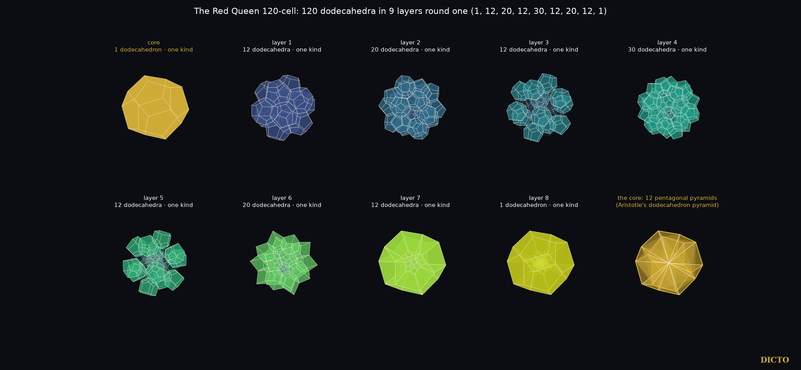
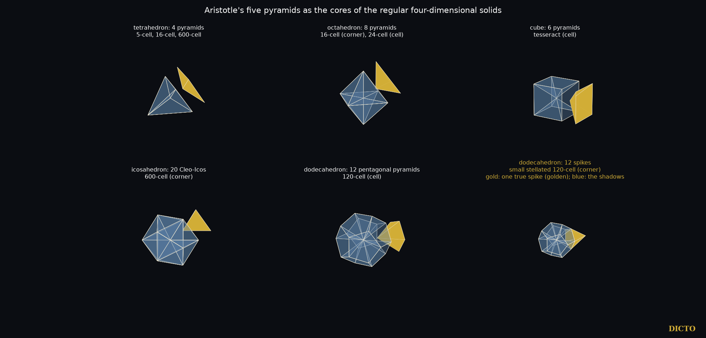

Aristotle's five pyramids as the cores of the regular four-dimensional solids
In #63, the White Queen 600-cell, 600 regular tetrahedra stand round 120 corners, and round one corner they fall into fifteen shells whose core is twenty Cleo-Icos filling a regular icosahedron (#19, #44). DICTO proposed her polar swap: every corner of one solid becomes a cell of the other. The polar of the 600-cell is the 120-cell, 120 regular dodecahedra round 600 corners. DICTO named it the Red Queen, after the other queen of Through the Looking-Glass. He then proposed that the dodecahedral pyramid, the one of Aristotle's five pyramids the White Queen lacks, sits at the Red Queen's core, and that all five pyramids are four-dimensional shadows. They are.
We build the 120-cell from the exact model of #63, in ℚ(√5). Its corners are the centres of the White Queen's 600 cells; two corners are joined when their cells share a triangle (1200 edges); the five cells round each White Queen edge give a pentagon (720 pentagons); the twenty cells round each White Queen corner give a cell (120 cells). Checked exactly: all corners on one sphere, all edges equal, four edges at every corner, every pentagon regular and shared by exactly two cells, every cell a regular dodecahedron (13 of 13 checks).

Layers and core. Round one dodecahedron the 120 cells stand in nine layers of 1, 12, 20, 12, 30, 12, 20, 12 and 1, each one kind of piece in the perspective view, and the 600 corners in fifteen layers of 20, 20, 30, 60, 60, 60, 20, 60, 20, 60, 60, 60, 30, 20 and 20: exactly the Cleo shells of the White Queen, since her cell centres are the Red Queen's corners. Both lists are palindromes, the same forwards and backwards, as the White Queen's shells are (#63): the Red Queen is centrally symmetric, so the layers counted from one cell match, in reverse, the layers counted from the opposite cell. The two cores exchange one for one: each of the White Queen's twenty Cleo-Icos becomes one of the twenty corners of the Red Queen's central dodecahedron, and each of the twelve corners of the White Queen's icosahedron becomes one of its twelve pentagons. The White Queen's twenty Cleo-Icos are real cells, the shadows of the twenty tetrahedra at her corner. The Red Queen's core is one whole cell; its twelve pentagonal pyramids, Aristotle's dodecahedron pyramid, appear when she is divided from her centre into 120 four-dimensional pyramids, one over each cell: the twelve sides of the central one cast them exactly (§3). In the star Red Queen (§5) they are parts of real cells again.
How it closes. Three regular dodecahedra round an edge fill 3 × 116.57° = 349.7° and leave a gap of 10.3°, so dodecahedra cannot close round an edge in ordinary space; five regular tetrahedra leave 7.36°. As three pentagons round a corner close only by folding up into the dodecahedron, these gaps close by bending into the fourth dimension, and the Red Queen closes with three dodecahedra round every edge. In the perspective view the pieces close with no gaps and no overlaps, slightly bent, and the last dodecahedron becomes the outside, as the last pentagon of a flattened dodecahedron becomes its outer rim.
Theorem. In perspective from just beyond the far side, along a corner or along a cell centre:
(1) Corner cores. The cells at one corner of the 5-cell, the 16-cell and the 600-cell cast the face pyramids of the regular tetrahedron (4), octahedron (8) and icosahedron (20, the Cleo-Icos), apex at the centre.
(2) Cell cores. The sides of the four-dimensional pyramid from the solid's centre over one cell cast the face pyramids of that cell: tetrahedron (5-cell, 16-cell, 600-cell), cube (tesseract, 6), octahedron (24-cell, 8) and dodecahedron (120-cell, 12).
(3) Exact proportions. In every case the shadow is exactly Aristotle's face pyramid of that Platonic solid: its side edge² over its base edge² is 3/8, 1/2, 3/4, (5 + √5)/8 and (9 + 3√5)/8 for the tetrahedron, octahedron, cube, icosahedron and dodecahedron.
(4) Polar pairs. 16-cell (8 octahedron pyramids) ↔ tesseract (6 cube pyramids); 600-cell (20 Cleo-Icos) ↔ 120-cell (12 pentagonal pyramids); the 5-cell and the 24-cell are their own polars.

Proof. The six solids are built exactly (the 5-cell in the hyperplane of five coordinates summing to zero; the 16-cell, tesseract and 24-cell from their standard coordinates; the 600-cell and 120-cell as in §2). For each we take the eye on the axis just beyond the far side and project. On the axis the corner, or the cell centre and the solid's centre, fall on the centre of the picture, so every piece through it becomes a pyramid with its apex there; we check exactly that the far ends of these pieces form a regular solid centred on the picture's centre, count its faces, and compare side edge² over base edge² with Aristotle's pyramid. All ten cases agree exactly (10 of 10).
DICTO pointed out that the pyramids in four dimensions may have different proportions from their shadows. They do. The corner cores are regular tetrahedra in four dimensions, side edge equal to base edge, but their shadows are the flatter face pyramids. The sides of a cell core run from the solid's centre to its corners, so in four dimensions their side edge² over base edge² is the solid's radius² over edge²: 2/5 (5-cell), 1/2 (16-cell), 1 (tesseract and 24-cell), (3 + √5)/2 (600-cell) and 7 + 3√5 (120-cell), while their shadows are again Aristotle's. The four-dimensional solids carry tall pieces; their shadows, in our space, are Aristotle's five pyramids.
No convex regular four-dimensional solid has dodecahedra round a corner: that would be {3,5,3}, which never closes and is the infinite icosahedral honeycomb of hyperbolic space. The star polytope {5/2,5,3}, the small stellated 120-cell of Hess, does. It stands on the White Queen's 120 corners, with 1200 edges joining corners one radius apart, 720 pentagrams and 120 small stellated dodecahedra, and round every corner a regular dodecahedron of twelve cells. Each of these twelve cells meets the corner with one spike, a pentagonal pyramid whose side edge is exactly φ times its base edge. In perspective the twelve spikes cast exactly the dodecahedron cut into Aristotle's twelve pentagonal pyramids (checked exactly, side edge² over base edge² = (9 + 3√5)/8). So the dodecahedral pyramids that no convex solid can hold at a corner sit at the corner of the star Red Queen: golden in four dimensions, Aristotle's in their shadow.
As for the White Queen in #63, we cut the Red Queen in her four main directions, through a corner, an edge, a pentagon and a cell, from the centre to the tip, at every corner height and once inside every gap, exactly in ℚ(√5). The one-pattern-per-gap lemma of #63 holds here too (cuts at ¼, ½ and ¾ of every gap cross the same edges), so this list is complete.
Atlas. The Red Queen has 124 slice patterns: 31 corner-first (faces of 3 to 8 sides, largest 108 vertices), 45 edge-first (3 to 9, the only nine-sided faces, largest 114), 33 pentagon-first (3 to 8 and 10, largest 120 vertices and 62 faces) and 15 cell-first (faces of 3, 4, 5, 6, 8 and 10 sides, largest 120 vertices).
Cell-first she passes through the Archimedean solids of the icosahedral family, each exact: the rhombicosidodecahedron, the truncated icosahedron and the truncated dodecahedron (each at one height inside its gap), the icosidodecahedron, and regular dodecahedra (edge φ times the cell's) up to the tip, where the slice is the cell itself; these dodecahedra are her only all-pentagon slices. The other directions begin with a regular tetrahedron (corner-first), a regular triangular prism (edge-first) and a regular pentagonal prism (pentagon-first), and regular decagons appear in the pentagon-first middle slice and in one cell-first gap.
Shadows. Her four shadows are
| Direction | Vertices · edges · faces | Faces | Front · back · side-on cells |
|---|---|---|---|
| corner-first | 158 · 240 · 84 | 72 pentagons, 12 decagons | 54 · 54 · 12 |
| edge-first | 180 · 282 · 104 | 96 pentagons, 6 decagons, 2 twelve-sided | 56 · 56 · 8 |
| pentagon-first | 160 · 250 · 92 | 80 pentagons, 10 octagons, 2 regular decagons | 54 · 54 · 12 |
| cell-first | 80 · 120 · 42 | 12 pentagons, 30 hexagons | 45 · 45 · 30 |
Every face that is not a pentagon is a side-on cell seen flat. As in the White Queen, each shadow resolves into two exact halves: the front cells fill it exactly once and so do the back cells (exact volume). And the two queens' atlases mirror each other by polarity: each of the Red Queen's shadows is the polar of the White Queen's middle slice in the same direction, and each of her middle slices is the polar of the White Queen's shadow.

The 120-cell and 600-cell are Schläfli's (about 1852, published 1901); their coordinates, polarity and the star polytopes {5/2,5,3} and the others are in Coxeter's Regular Polytopes, the star polytopes first found by Schläfli and Hess (1883). Alicia Boole Stott modelled sections of the 120-cell about 1900. The layers 1, 12, 20, 12, 30, … of the 120-cell's cells round one cell are known, for example in Schleimer and Segerman's Puzzling the 120-cell. Aristotle's claim and the long dispute over how many pyramids meet round a point are traced by Lagarias and Zong (2012); the face pyramids of the Platonic solids and which of them fill space are #44, Aristotle's Pyramid, and the Cleo-Icos is #19. We found no earlier statement that Aristotle's five pyramids are exactly the perspective cores of the regular four-dimensional solids, nor of the star core of {5/2,5,3}.
Sources checked (28 October 2026). Reference library search ("120-cell layers round one cell; Boole Stott sections; Schlegel diagram; 600-cell and 120-cell duality"): H. S. M. Coxeter, Regular Polytopes, 3rd ed. (1973); M. Koca, N. Koca, M. Al-Ajmi, branching of the W(H4) polytopes (2011); M. Koca, M. Al-Ajmi, N. Koca, grand antiprism by quaternions (2009); Kaida Shi, overall shapes of the 120-cell and 600-cell (2009); A. Garrison and R. Scott, small covers of the dodecahedron and the 120-cell (2001); J. C. Lagarias and C. Zong, "Mysteries in packing regular tetrahedra", Notices of the AMS (2012). Web search "120-cell layers of cells around one dodecahedron 1, 12, 20, 12, 30": Wikipedia "120-cell" (citing J. Stillwell, "The story of the 120-cell", Notices of the AMS, 2001); S. Schleimer and H. Segerman, "Puzzling the 120-cell", arXiv 1310.3549, and their sculpture talks; the Zometool 120-cell model page of the Ruhr-Universität Bochum. Hess (1883) and the hyperbolic {3,5,3} are cited from Coxeter's book as standard; not read for this paper.
Aristotle's five pyramids are the shadows of the four-dimensional regular solids' cores: three as the cells round a corner, three as the sides of the pyramid over a cell, each with exactly Aristotle's proportions, paired by polarity. The Red Queen, built from the White Queen, holds the dodecahedral one at her core, and the star Red Queen holds it at every corner, golden in four dimensions. Her atlas of 124 slices and four shadows mirrors the White Queen's by polarity, shadow for middle slice.
Data and code. Study 2026-10-27-white-queen-polar (red_queen.py, five_pyramids.py, atlas120.py, render_red_queen.py, render_five_pyramids.py, render_atlas120.py; data red_queen.json, five_pyramids.json, atlas120.json), built on the exact source model of #63. References: DICTO, The White Queen 600-cell (#63, DOI 10.5281/zenodo.23690856); Aristotle's Pyramid (#44); the Cleo-Icos (#19).